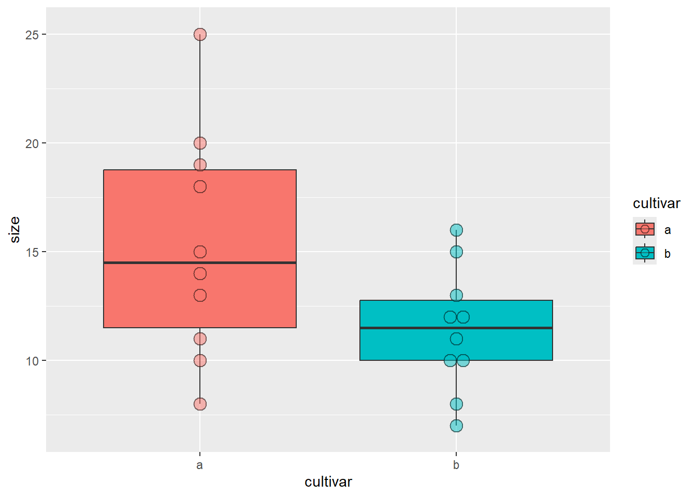
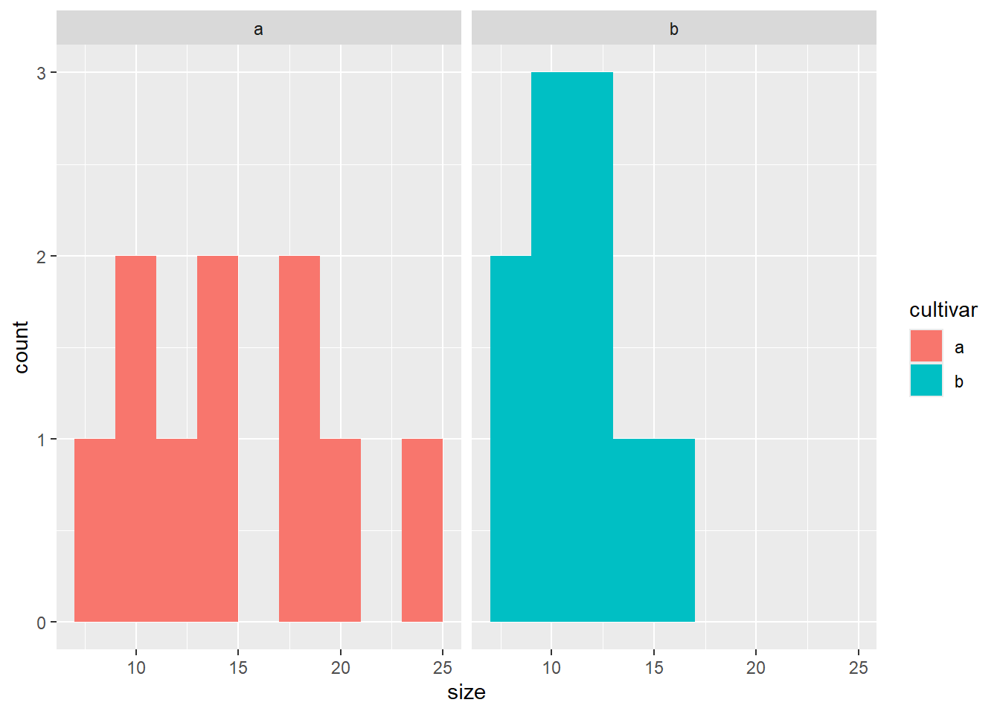

# Je 10 Messwerte für Sorte a und b zu einem Data Frame im long-Format verbinden
Messwerte_a <- c(20, 19, 25, 10, 8, 15, 13, 18, 11, 14) # Messwerte von Cultivar a
Messwerte_b <- c(12, 15, 16, 7, 8, 10, 12, 11, 13, 10) # Messwerte von Cultivar b
cultivar <- as.factor( c(rep("a", 10), rep("b", 10))) # Bezeichnug der Cultivare in der Tabelle
blume <- data.frame("cultivar" = cultivar, "size" = c(Messwerte_a, Messwerte_b)) # Data frame erstellen Statistik 1: Demo
Download dieses Demoscript via “</>Code” (oben rechts)
t-Test
Daten generieren und anschauen
# Boxplots
library(ggplot2)
ggplot(blume, aes(x = cultivar, y = size, fill = cultivar)) +
geom_boxplot() + # Boxplots
geom_dotplot(binaxis = "y", stackdir = "center", alpha = 0.5) # Datenpunkte darstellen
# Histogramme
ggplot(blume, aes(x = size, fill = cultivar)) +
geom_histogram(binwidth = 2) +
facet_wrap(~ cultivar)
Zweiseitiger t-Test
# Links der Tilde ("~") steht immer die abhängige Variable, rechsts die erklärende(n) Variable(n)
# Alternativ kann man die Werte auch direkt in die t.test()-Funktion eigeben:
# t.test(Messwerte_a, Messwerte_b)
t.test(size ~ cultivar, data = blume) # Zweiseitig "Test auf a ≠ b" (default)
##
## Welch Two Sample t-test
##
## data: size by cultivar
## t = 2.0797, df = 13.907, p-value = 0.05654
## alternative hypothesis: true difference in means between group a and group b is not equal to 0
## 95 percent confidence interval:
## -0.1245926 7.9245926
## sample estimates:
## mean in group a mean in group b
## 15.3 11.4Einseitiger t-Test
t.test(size ~ cultivar, alternative = "greater", data = blume) # Einseitig "Test auf a > b"
##
## Welch Two Sample t-test
##
## data: size by cultivar
## t = 2.0797, df = 13.907, p-value = 0.02827
## alternative hypothesis: true difference in means between group a and group b is greater than 0
## 95 percent confidence interval:
## 0.5954947 Inf
## sample estimates:
## mean in group a mean in group b
## 15.3 11.4
t.test(size ~ cultivar, alternative = "less", data = blume) # Einseitig "Test auf a < b"
##
## Welch Two Sample t-test
##
## data: size by cultivar
## t = 2.0797, df = 13.907, p-value = 0.9717
## alternative hypothesis: true difference in means between group a and group b is less than 0
## 95 percent confidence interval:
## -Inf 7.204505
## sample estimates:
## mean in group a mean in group b
## 15.3 11.4Klassischer t-Test vs. Welch Test
# Varianzen gleich: klassischer t-Test
t.test(size ~ cultivar, var.equal = TRUE, data = blume)
##
## Two Sample t-test
##
## data: size by cultivar
## t = 2.0797, df = 18, p-value = 0.05212
## alternative hypothesis: true difference in means between group a and group b is not equal to 0
## 95 percent confidence interval:
## -0.03981237 7.83981237
## sample estimates:
## mean in group a mean in group b
## 15.3 11.4
# Varianzen ungleich: Welch's t-Test (siehe Titelzeile des R-Outputs!)
t.test(size ~ cultivar, data = blume) # dasselbe wie var.equal = FALSE
##
## Welch Two Sample t-test
##
## data: size by cultivar
## t = 2.0797, df = 13.907, p-value = 0.05654
## alternative hypothesis: true difference in means between group a and group b is not equal to 0
## 95 percent confidence interval:
## -0.1245926 7.9245926
## sample estimates:
## mean in group a mean in group b
## 15.3 11.4Gepaarter t-Test
# Gepaarter t-Test: erster Wert von a wird mit erstem Wert von
# b gepaart, zweiter Wert von a mit zweitem von b ect.
t.test(Messwerte_a, Messwerte_b, paired = TRUE) # für gepaarten t-Test funktioniert Notation "size ~ cultivar" nicht
##
## Paired t-test
##
## data: Messwerte_a and Messwerte_b
## t = 3.4821, df = 9, p-value = 0.006916
## alternative hypothesis: true mean difference is not equal to 0
## 95 percent confidence interval:
## 1.366339 6.433661
## sample estimates:
## mean difference
## 3.9Binomialtest
In Klammern übergibt man die Anzahl der Erfolge und die Stichprobengrösse
binom.test(84, 200) # Anzahl Frauen im Nationalrat (≙ 42.0 %; Stand 2019)
##
## Exact binomial test
##
## data: 84 and 200
## number of successes = 84, number of trials = 200, p-value = 0.02813
## alternative hypothesis: true probability of success is not equal to 0.5
## 95 percent confidence interval:
## 0.3507439 0.4916638
## sample estimates:
## probability of success
## 0.42
binom.test(116, 200) # Anzahl Männer im Nationalrat (≙ 58.0 %; Stand 2019)
##
## Exact binomial test
##
## data: 116 and 200
## number of successes = 116, number of trials = 200, p-value = 0.02813
## alternative hypothesis: true probability of success is not equal to 0.5
## 95 percent confidence interval:
## 0.5083362 0.6492561
## sample estimates:
## probability of success
## 0.58
binom.test(3, 7) # Anzahl Frauen im Bundesrat (≙ 42.9 %; Stand 2019)
##
## Exact binomial test
##
## data: 3 and 7
## number of successes = 3, number of trials = 7, p-value = 1
## alternative hypothesis: true probability of success is not equal to 0.5
## 95 percent confidence interval:
## 0.09898828 0.81594843
## sample estimates:
## probability of success
## 0.4285714Chi-Quadrat-Test & Fishers Test
Ermitteln des kritischen Wertes
qchisq(0.95, 1)
## [1] 3.841459Direkter Test in R (dazu Werte als Matrix nötig)
# Matrix mit Haarfarbe&Augenfarbe-Kombinationen erstellen
# 38 blond&blau, 14 dunkel&blau, 11 blond&braun, 51 dunkel&braun
count <- matrix(c(38, 14, 11, 51), nrow = 2)
count # Check
## [,1] [,2]
## [1,] 38 11
## [2,] 14 51
rownames(count) <- c("blond", "dunkel") # Benennen für Übersicht
colnames(count) <- c("blau", "braun") # Benennen für Übersicht
count # Check
## blau braun
## blond 38 11
## dunkel 14 51
# Tests durchführen
chisq.test(count)
##
## Pearson's Chi-squared test with Yates' continuity correction
##
## data: count
## X-squared = 33.112, df = 1, p-value = 8.7e-09
fisher.test(count)
##
## Fisher's Exact Test for Count Data
##
## data: count
## p-value = 2.099e-09
## alternative hypothesis: true odds ratio is not equal to 1
## 95 percent confidence interval:
## 4.746351 34.118920
## sample estimates:
## odds ratio
## 12.22697